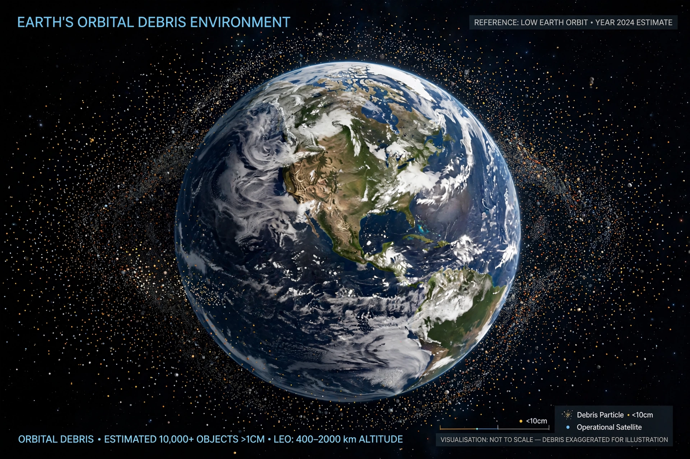

Kessler syndrome
From Wikipedia, the free encyclopedia
| Kessler syndrome | |
|---|---|
| Proposed by | Donald J. Kessler (1978) |
| Field | Space debris / astrodynamics |
| Related incident | 2009 Iridium–Kosmos collision |

Debris density around Earth (illustration).The Kessler syndrome, proposed by NASA scientist Donald J. Kessler in 1978, is a scenario in which the density of objects in low Earth orbit becomes so high that collisions between objects create fragments that cause further collisions — a cascade that could render some orbits unusable for generations and make spaceflight far more hazardous.
Kessler and Burton Cour-Palais originally calculated that even if all launches stopped, collisions among the objects already in orbit would eventually increase the debris population. The scenario gained urgency after real events: China's 2007 anti-satellite test, which created thousands of tracked fragments, and the 2009 accidental collision between Iridium 33 and the defunct Russian satellite Kosmos 2251.
Risk and mitigation
Operators now track tens of thousands of objects and manoeuvre working satellites — the International Space Station regularly dodges debris. Mitigation rules ask satellites to deorbit within a few years of end of mission (to decay naturally or move to a Graveyard orbit), and companies like those deploying the Starlink constellation — whose growth has sharpened the debate — fit autonomous collision-avoidance systems.
Whether low orbit is already near a slow-motion cascade in the most crowded altitude bands is actively debated among specialists; removal of derelict rocket bodies and dead satellites is widely considered the most effective remedy, and several active debris-removal demonstration missions have flown.
See also
Space debris · Graveyard orbit · Low Earth orbit · International Space Station